- 00 开篇词 打破四大认知局限，进阶高级性能工程师.md.html
- 01 性能工程：为什么很多性能测试人员无法对性能结果负责？.md.html
- 02 关键概念：性能指标和场景的确定.md.html
- 03 核心分析逻辑：所有的性能分析，靠这七步都能搞定.md.html
- 04 如何构建性能分析决策树和查找瓶颈证据链？.md.html
- 05 性能方案：你的方案是否还停留在形式上？.md.html
- 06 如何抽取出符合真实业务场景的业务模型？.md.html
- 07 性能场景的数据到底应该做成什么样子？.md.html
- 08 并发、在线和TPS到底是什么关系？.md.html
- 09 如何设计全局和定向监控策略？.md.html
- 10 设计基准场景需要注意哪些关键点？.md.html
- 11 打开首页之一：一个案例，带你搞懂基础硬件设施的性能问题.md.html
- 12 打开首页之二：如何平衡利用硬件资源？.md.html
- 13 用户登录：怎么判断线程中的Block原因？.md.html
- 14 用户信息查询：如何解决网络软中断瓶颈问题？.md.html
- 15 查询商品：资源不足有哪些性能表现？.md.html
- 16 商品加入购物车：SQL优化和压力工具中的参数分析.md.html
- 17 查询购物车：为什么铺底参数一定要符合真实业务特性？.md.html
- 18 购物车信息确定订单：为什么动态参数化逻辑非常重要？.md.html
- 19 生成订单信息之一：应用JDBC池优化和内存溢出分析.md.html
- 20 生成订单信息之二：业务逻辑复杂，怎么做性能优化？.md.html
- 21 支付前查询订单列表：如何分析优化一个固定的技术组件？.md.html
- 22 支付订单信息：如何高效解决for循环产生的内存溢出？.md.html
- 23 决定容量场景成败的关键因素有哪些？.md.html
- 24 容量场景之一：索引优化和Kubernetes资源分配不均衡怎么办？.md.html
- 25 容量场景之二：缓存对性能会有什么样的影响？.md.html
- 26 稳定性场景之一：怎样搞定业务积累量产生的瓶颈问题？.md.html
- 27 稳定性场景之二：怎样搞定磁盘不足产生的瓶颈问题？.md.html
- 28 如何确定异常场景的范围和设计逻辑？.md.html
- 29 异常场景：如何模拟不同组件层级的异常？.md.html
- 30 如何确定生产系统配置？.md.html
- 31 怎么写出有价值的性能报告？.md.html
- 我们这个课程的系统是怎么搭建起来的？.md.html
- 结束语 做真正的性能项目.md.html
- 捐赠
16 商品加入购物车：SQL优化和压力工具中的参数分析
你好，我是高楼。
今天这节课，我用商品加入购物车接口，来给你讲一讲SQL优化和压力工具中的参数分析。
对于SQL的优化，很多人一看到数据库资源使用率高，就猜测是SQL有问题。这个方向看起来没错，但是，具体是哪个SQL有问题，以及有什么样的问题，往往回答不出来。因此，这节课我会教你怎么根据资源使用率高，快速定位到有问题的SQL，并做出相应的调整。此外，你还将看到，当压力工具的参数使用不合理时，我们应该如何处理由此产生的数据库锁的问题。
现在，我们就开始这节课的分析。
压力数据
对于商品加入购物车这个接口，我们第一次运行的性能场景结果如下：
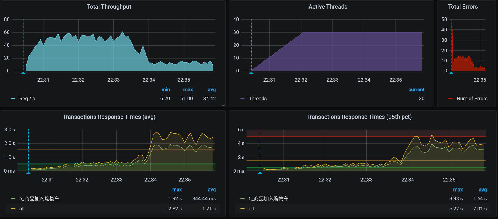
看着有一种想哭的感觉，有没有？从这张图来看，问题不止一个。我用自己在有限的职业生涯中吸收的天地之灵气，打开天眼一看，感觉这里有两个问题：
- TPS即使在峰值的时候，也不够高，才50左右；
- TPS在峰值的时候，有大量的错误产生。
那哪个问题更重要呢？有人可能说，明显应该处理错误呀，有错误看着不眼晕吗？如果你是有强迫症的人，那没办法，可以先处理错误。
不过，在我看来，先处理TPS不高的问题也是可以的。因为虽然有错误产生，但并不是全错呀，只有5%的错，你着个啥急。
可是，不管怎么着，我们都要走性能分析决策树的思路。
看架构图
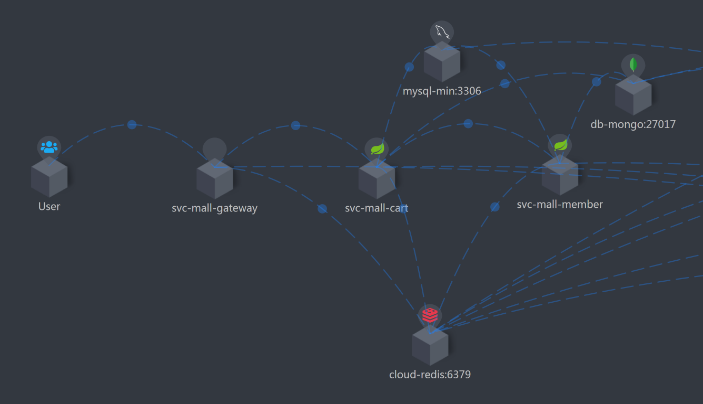
这个接口的逻辑清晰明了：压力工具 - Gateway - Cart - Member。
我打算先分析TPS不高、响应时间变长的问题，这个问题可以在压力曲线图的前半段中看出来。所以，接下来，我们的分析就从拆分响应时间开始。
如果你想在这样的场景中先处理错误 ，那就从查日志开始。其实，这些错误是容易处理的，因为它们给出了非常明确的方向指示。
分析的第一阶段
拆分响应时间
这次我们截小图。
- User - Gateway：
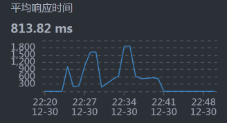
- Gateway - Cart：
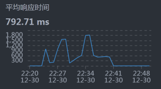
- Cart - Member ：
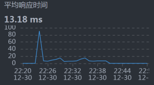
- Cart - MySQL：
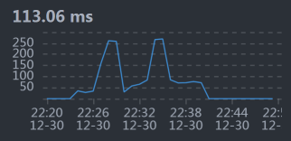
- Member - MySQL：
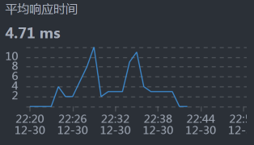
从响应时间上来看，我们需要先收拾MySQL，并且是和Cart服务相关的SQL，因为Cart - MySQL之间的响应时间有点长。
全局分析
按照我们的惯例，还是得来看一下全局监控。
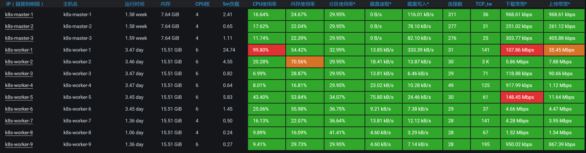
既然worker-1上的CPU使用率很高，那我们就去看看worker-1上运行着什么服务。
你也许会问，网络的下载带宽也飘红了啊，已经达到100Mb以上了。这就涉及到怎么理解计数器的问题了。这里的网络虽然飘红了，但也只有100多Mb，它飘红只是因为Grafana DashBoard的阈值设置问题。如果你不想让它飘红，也可以把阈值设置得高一点。并且对于网络来说，100多Mb，真的不算大。
我们来看一下worker-1上有什么。
[root@k8s-master-2 ~]# kubectl get pods -o wide|grep k8s-worker-1
elasticsearch-data-1 1/1 Running 1 11d 10.100.230.57 k8s-worker-1 <none> <none>
elasticsearch-master-0 1/1 Running 0 3d11h 10.100.230.60 k8s-worker-1 <none> <none>
mysql-min-d564fc4df-vs7d6 1/1 Running 0 22h 10.100.230.1 k8s-worker-1 <none> <none>
[root@k8s-master-2 ~]#
你看，这个worker-1上不止有MySQL，还有ES data，这是一个吃网络的大户。不过，现在问题并没有指向它。
我们在前面看到的是MySQL的响应时间长，所以我们再到worker-1上，接着看全局监控的数据。
[root@k8s-worker-1 ~]# top
top - 23:08:21 up 3 days, 11:30, 5 users, load average: 29.90, 28.54, 23.00
Tasks: 309 total, 1 running, 307 sleeping, 0 stopped, 1 zombie
%Cpu0 : 94.1 us, 0.0 sy, 0.0 ni, 0.0 id, 0.0 wa, 0.0 hi, 2.9 si, 2.9 st
%Cpu1 : 94.1 us, 2.9 sy, 0.0 ni, 0.0 id, 0.0 wa, 0.0 hi, 2.9 si, 0.0 st
%Cpu2 : 90.9 us, 3.0 sy, 0.0 ni, 0.0 id, 0.0 wa, 0.0 hi, 0.0 si, 6.1 st
%Cpu3 : 89.7 us, 3.4 sy, 0.0 ni, 0.0 id, 0.0 wa, 0.0 hi, 3.4 si, 3.4 st
%Cpu4 : 87.9 us, 6.1 sy, 0.0 ni, 3.0 id, 0.0 wa, 0.0 hi, 0.0 si, 3.0 st
%Cpu5 : 87.9 us, 9.1 sy, 0.0 ni, 0.0 id, 0.0 wa, 0.0 hi, 0.0 si, 3.0 st
KiB Mem : 16265992 total, 1176564 free, 8436112 used, 6653316 buff/cache
KiB Swap: 0 total, 0 free, 0 used. 7422832 avail Mem
PID USER PR NI VIRT RES SHR S %CPU %MEM TIME+ COMMAND
21344 27 20 0 8222204 628452 12892 S 331.4 3.9 141:36.72 /opt/rh/rh-mysql57/root/usr/libexec/mysqld --defaults-file=/etc/my.cnf
5128 techstar 20 0 5917564 1.4g 21576 S 114.3 8.8 233:09.48 /usr/share/elasticsearch/jdk/bin/java -Xshare:auto -Des.networkaddress.cache+
5127 techstar 20 0 14.1g 3.5g 25756 S 40.0 22.8 1647:28 /usr/share/elasticsearch/jdk/bin/java -Xshare:auto -Des.networkaddress.cache+
1091 root 20 0 1145528 108228 29420 S 25.7 0.7 263:51.49 /usr/bin/dockerd -H fd:// --containerd=/run/containerd/containerd.sock
1078 root 20 0 2504364 106288 38808 S 14.3 0.7 429:13.57 /usr/bin/kubelet --bootstrap-kubeconfig=/etc/kubernetes/bootstrap-kubelet.co+
17108 root 20 0 164472 2656 1712 R 14.3 0.0 0:00.66 top
从上面的数据中，我们也能看到MySQL的进程消耗的CPU比较多，这说明我们现在走的证据链是正确的。既然走到了数据库，那我们主要看什么呢？当然是看MySQL的全局监控了。所以，我打印了MySQL Report，过滤掉一些没问题的数据之后得到如下结果（不然内容就太长了）：
__ Questions ___________________________________________________________
Total 637.05k 8.0/s
DMS 293.57k 3.7/s %Total: 46.08
Com_ 235.02k 2.9/s 36.89
.............................
Slow 20 ms 119.50k 1.5/s 18.76 %DMS: 40.70 Log:
DMS 293.57k 3.7/s 46.08
SELECT 224.80k 2.8/s 35.29 76.57
UPDATE 51.86k 0.6/s 8.14 17.66
INSERT 16.92k 0.2/s 2.66 5.76
REPLACE 0 0/s 0.00 0.00
DELETE 0 0/s 0.00 0.00
.............................
__ SELECT and Sort _____________________________________________________
Scan 137.84k 1.7/s %SELECT: 61.32
.............................
从上面的数据我们可以看到，在Total的部分中，DMS（Data Manipulation Statements ，数据维护语句）占比46.08%。而在DMS中，SELECT占比76.57%。所以，我们要把后续分析的重点放在SELECT语句上。
通过Slow这一行，看到慢日志也已经出现，因为我把慢日志阈值设置的比较低，只有20ms，所以，你能看到每秒产生了1.5个慢日志。我之所以把慢日志阈值设的比较低，主要是想把稍微慢一点的SQL都记录下来。不过，在你的应用中，要根据实际的情况来，不要设置过大，也不要过小，不然都是泪。
定向分析
下面就是看慢日志喽。请你记住，在看MySQL慢日志之前，最好先把日志清一遍，让这个日志只记录压力场景执行时间段内的慢SQL，不然受影响的数据会很多。
[root@7dgroup1 gaolou]# pt-query-digest slow-query.log
# 7.2s user time, 70ms system time, 36.78M rss, 106.05M vsz
# Current date: Wed Dec 30 23:30:14 2020
# Hostname: 7dgroup1
# Files: slow-query.log
# Overall: 36.60k total, 7 unique, 89.06 QPS, 17.17x concurrency _________
# Time range: 2020-12-30T15:22:00 to 2020-12-30T15:28:51
# Attribute total min max avg 95% stddev median
# ============ ======= ======= ======= ======= ======= ======= =======
# Exec time 7055s 20ms 1s 193ms 501ms 160ms 128ms
# Lock time 7s 0 39ms 194us 247us 696us 125us
# Rows sent 35.45k 0 1 0.99 0.99 0.09 0.99
# Rows examine 2.33G 0 112.76k 66.71k 112.33k 46.50k 112.33k
# Query size 14.26M 6 1016 408.53 592.07 195.17 202.40
# Profile
# Rank Query ID Response time Calls R/Call V/M It
# ==== ============================= =============== ===== ====== ===== ==
# 1 0xB8BDB35AD896842FAC41202B... 5744.3322 81.4% 18420 0.3119 0.07 SELECT pms_sku_stock
# 2 0xC71984B4087F304BE41AC8F8... 1309.1841 18.6% 18138 0.0722 0.03 SELECT oms_cart_item
# MISC 0xMISC 1.4979 0.0% 46 0.0326 0.0 <5 ITEMS>
# Query 1: 44.82 QPS, 13.98x concurrency, ID 0xB8BDB35AD896842FAC41202BB9C908E8 at byte 6504041
# This item is included in the report because it matches --limit.
# Scores: V/M = 0.07
# Time range: 2020-12-30T15:22:00 to 2020-12-30T15:28:51
# Attribute pct total min max avg 95% stddev median
# ============ === ======= ======= ======= ======= ======= ======= =======
# Count 50 18420
# Exec time 81 5744s 76ms 1s 312ms 580ms 148ms 279ms
# Lock time 47 3s 70us 37ms 184us 224us 673us 119us
# Rows sent 50 17.99k 1 1 1 1 0 1
# Rows examine 85 1.98G 112.76k 112.76k 112.76k 112.76k 0 112.76k
# Query size 26 3.72M 212 212 212 212 0 212
# String:
# Hosts 10.100.5.54
# Users reader
# Query_time distribution
# 1us
# 10us
# 100us
# 1ms
# 10ms #
# 100ms ################################################################
# 1s #
# 10s+
# Tables
# SHOW TABLE STATUS LIKE 'pms_sku_stock'\G
# SHOW CREATE TABLE `pms_sku_stock`\G
# EXPLAIN /*!50100 PARTITIONS*/
select
id, product_id, sku_code, price, stock, low_stock, pic, sale, promotion_price, lock_stock,
sp_data
from pms_sku_stock
WHERE ( sku_code = '202008270027906' )\G
# Query 2: 44.13 QPS, 3.19x concurrency, ID 0xC71984B4087F304BE41AC8F82A88B245 at byte 20901845
# This item is included in the report because it matches --limit.
# Scores: V/M = 0.03
# Time range: 2020-12-30T15:22:00 to 2020-12-30T15:28:51
# Attribute pct total min max avg 95% stddev median
# ============ === ======= ======= ======= ======= ======= ======= =======
# Count 49 18138
# Exec time 18 1309s 20ms 419ms 72ms 148ms 43ms 59ms
# Lock time 52 4s 76us 39ms 205us 260us 719us 138us
# Rows sent 49 17.45k 0 1 0.99 0.99 0.12 0.99
# Rows examine 14 356.31M 19.96k 20.22k 20.12k 19.40k 0 19.40k
# Query size 73 10.51M 604 610 607.81 592.07 0 592.07
# String:
# Hosts 10.100.5.54
# Users reader
# Query_time distribution
# 1us
# 10us
# 100us
# 1ms
# 10ms ################################################################
# 100ms ##################
# 1s
# 10s+
# Tables
# SHOW TABLE STATUS LIKE 'oms_cart_item'\G
# SHOW CREATE TABLE `oms_cart_item`\G
# EXPLAIN /*!50100 PARTITIONS*/
select
id, product_id, product_sku_id, member_id, quantity, price, product_pic, product_name,
product_sub_title, product_sku_code, member_nickname, create_date, modify_date, delete_status,
product_category_id, product_brand, product_sn, product_attr
from oms_cart_item
WHERE ( member_id = 381920
and product_id = 317
and delete_status = 0
and product_sku_id = 317 )\G
从上面的数据来看，我们的优化方向比较简单明了：占用总时间最长的两个SQL需要收拾，其中，一个占用了总时间的81.4%，另一个占用了18.6%。
我们先来看最慢的那个SQL：
select
id, product_id, sku_code, price, stock, low_stock, pic, sale, promotion_price, lock_stock,
sp_data
from pms_sku_stock
WHERE ( sku_code = '202008270027906' )\G
要想知道一个语句哪里慢，就得来看一下执行计划：
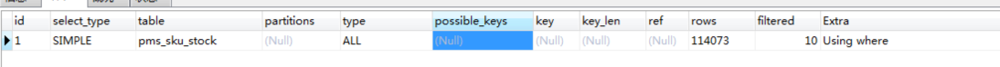
在执行计划中，type这一列的参数值为ALL，说明这个SQL没有用到索引。你想想，一个有where条件的语句，又没有用到索引，那它上方的索引到底合不合理呢？我们不妨检查一下这个索引：
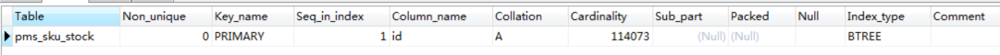
通过检查索引，我们看到只有一个ID列，也就是一个主键索引，并没有where条件中的sku_code列。所以，我们先给sku_code加一个索引来实现精准查询，这样就不用扫描整表的数据了：
ALTER TABLE pms_sku_stock ADD INDEX sku_code_index (sku_code);
修改之后，我们再来看一下此时的执行计划：
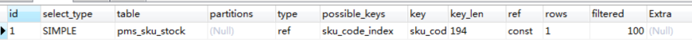
现在，type列的参数值变为了ref，说明where条件确实走了索引了。那我们再把场景执行起来，看看效果：
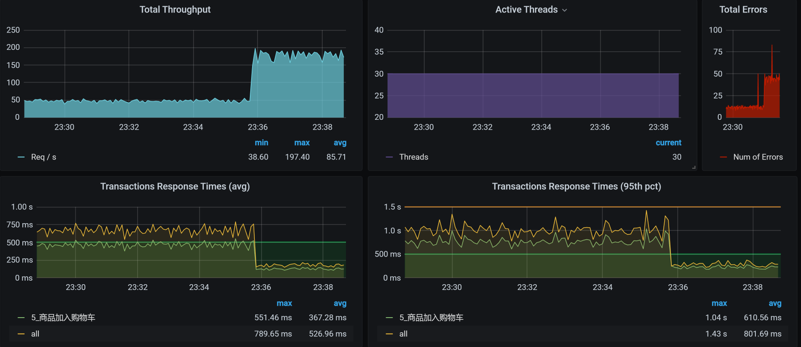
从结果来看，TPS从50增加到了150以上。响应时间也从750ms左右降到250ms以下。效果显著。
收拾完了第一个SQL后，我们再来收拾另一个SQL。同样地，我们先看它的执行计划：
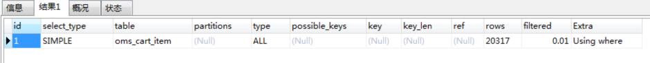
type列的参数值为ALL，表明where条件没有使用索引。但是，第二个语句用了好几个where条件，所以，我们直接加一个组合索引，让where条件可以走到索引这里：
ALTER TABLE oms_cart_item ADD INDEX mix_index (member_id,product_id,product_sku_id);
加了组合索引后，这个SQL的执行计划如下：
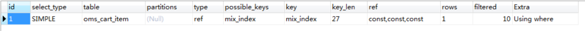
还是一样，我们再次把场景跑起来，看看优化了这两个最慢的SQL之后，效果如何。
优化效果
优化效果如下：
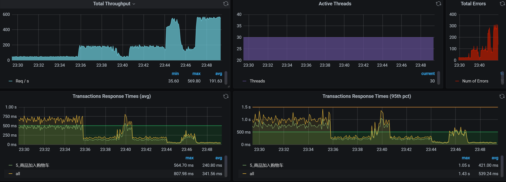
优化前后的对比图如下：
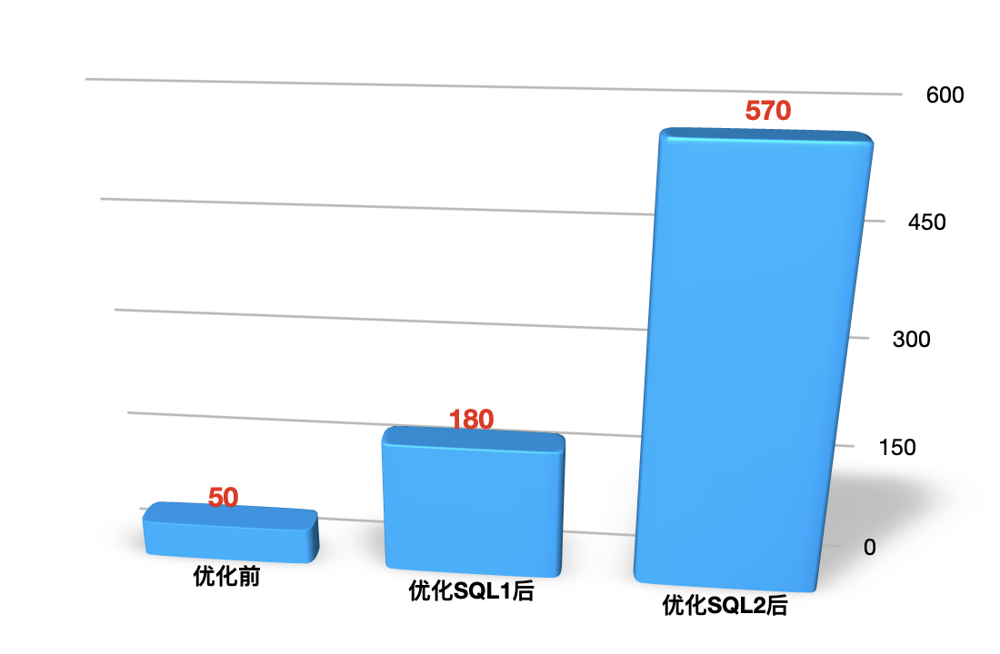
建议你在写报告的时候，画这种对比图，用它来说明优化效果是非常直接明显的。
分析的第二阶段
现在我们就要来分析错误了，反正也忽悠不过去。
压力数据
下面是对应的错误图，我把图截多一点，可以看到趋势如下：
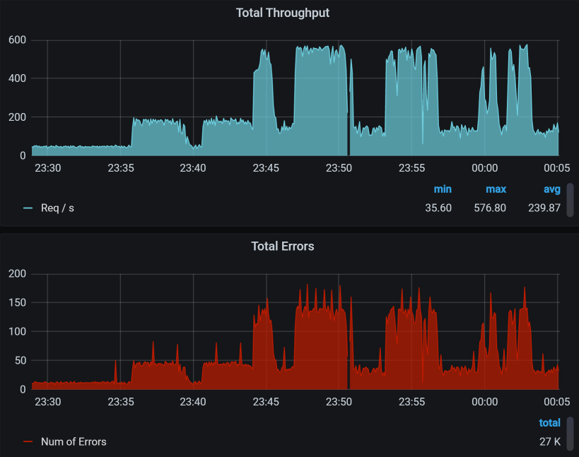
你看，TPS中有对的，也有错的，并且TPS越高的时候，错误率也越高。这一点很重要，希望你能记住。
紧接着，我们来拆分响应时间。
拆分响应时间
先设置skywalking的时间段：
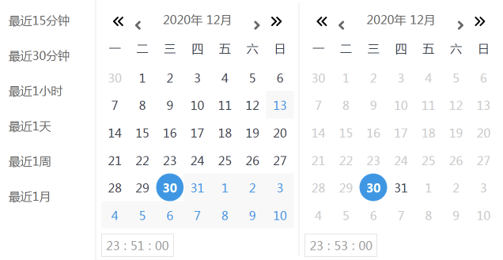
请你注意，在看性能计数器的时候，每一个工具上的时间窗口一定要对应上。
- User - Gateway：
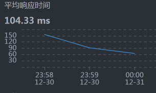
- Gateway - Cart：
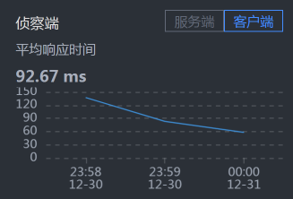-

- Cart - Member：
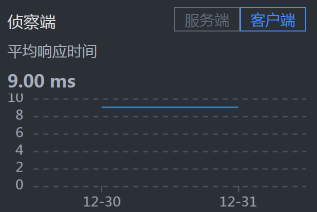
- Cart - MySQL：
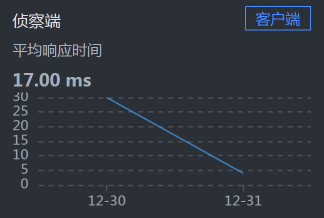
- Member - MySQL：
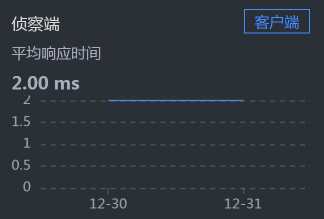
罗列了一堆信息之后……并没有什么发现。
你可能会奇怪，为什么说没有发现呢，Cart上的响应时间不是比较长吗？这里你就要注意了，我们现在分析的问题是错误，而不是响应时间，所以时间长就长呗。在分析的过程中，你一定要时刻记得自己查的是什么问题，不要走到半路就走岔了，那样会陷入混乱的状态。
全局分析
通常情况下，我们的全局分析都是从资源开始的对吧，也就是从性能分析决策树中一层层查下去。对应我们第4节课讲的内容，你可以把所有的第一层计数器查一遍。
而在我们的这个问题的分析中，其实不用那么麻烦，因为在前面看到压力数据的时候，已经看到了大量的报错了，要想分析错误，肯定得先知道错误在哪，所以，这里我们直接查日志相关的内容就可以。查到日志的时候，我们看到下面这些错误信息：
2020-12-30 23:44:06.754 ERROR 1 --- [io-8086-exec-41] o.a.c.c.C.[.[.[/].[dispatcherServlet] : Servlet.service() for servlet [dispatcherServlet] in context with path [] threw exception [Request processing failed; nested exception is org.springframework.dao.DeadlockLoserDataAccessException:
### Error updating database. Cause: com.mysql.cj.jdbc.exceptions.MySQLTransactionRollbackException: Deadlock found when trying to get lock; try restarting transaction
### The error may involve com.dunshan.mall.mapper.OmsCartItemMapper.updateByPrimaryKey-Inline
### The error occurred while setting parameters
### SQL: update oms_cart_item set product_id = ?, product_sku_id = ?, member_id = ?, quantity = ?, price = ?, product_pic = ?, product_name = ?, product_sub_title = ?, product_sku_code = ?, member_nickname = ?, create_date = ?, modify_date = ?, delete_status = ?, product_category_id = ?, product_brand = ?, product_sn = ?, product_attr = ? where id = ?
### Cause: com.mysql.cj.jdbc.exceptions.MySQLTransactionRollbackException: Deadlock found when trying to get lock; try restarting transaction
; Deadlock found when trying to get lock; try restarting transaction; nested exception is com.mysql.cj.jdbc.exceptions.MySQLTransactionRollbackException: Deadlock found when trying to get lock; try restarting transaction] with root cause
...................................
这个错误已经给了我们明确的指向：死锁。可是为什么会死锁呢？
在性能分析中，你要记得，死锁其实是相对容易分析的内容。有争用才有锁，而死锁，就是说锁被争得死死的。
下面我们开始定向分析为什么会产生锁。
定向分析
首先，我们找到商品加入购物车业务对应的代码：
/**
* 增加购物车
* @param productSkuCode 库存商品编号
* @param quantity 商品数量
* @return
*/
@Override
public int addCart(String productSkuCode, Integer quantity) {
.........................................
OmsCartItem existCartItem = getCartItem(cartItem);
if (existCartItem == null) {
cartItem.setCreateDate(new Date());
count = cartItemMapper.insert(cartItem);
} else {
cartItem.setModifyDate(new Date());
existCartItem.setQuantity(existCartItem.getQuantity() + cartItem.getQuantity());
count = cartItemMapper.updateByPrimaryKey(existCartItem);
}
return count;
}
引用这段代码的事务如下：
@Transactional
int addCart(String productSkuCode, Integer quantity);
根据上面的关系，对于商品加入购物车来说，什么能引起死锁呢？你看，在代码中有一个update，它对应的也就是前面日志中的update语句。所以，要是发生死锁的话，那指定就是ID冲突了，而这个ID对应的就是会员ID。也就是说，有多个线程同时想更新同一个会员的购物车，这怎么能行！
既然是会员ID冲突了，那是谁给的会员信息呢？想都不用想，这个会员信息肯定是从脚本中传过来的呀，所以我们要查查脚本。
对应的脚本如下：
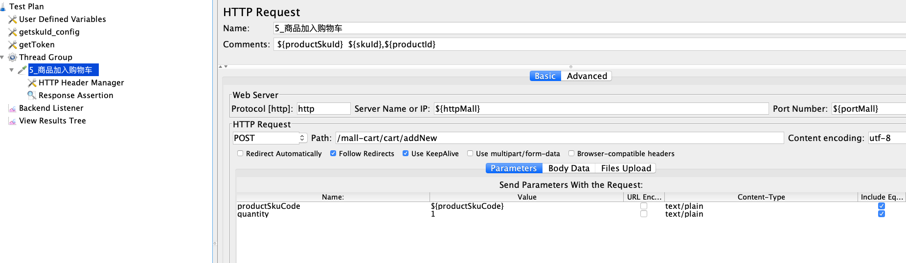
你看，这里有一个productSkuCode参数，共用了1000行数据量。
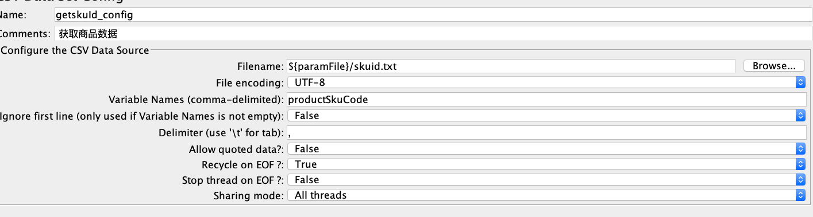
上面的图对应的JMeter脚本是这样的：
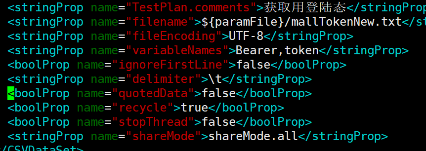
我们来看JMeter脚本中的这三个参数：
quotedData: false
recycle: true
stopThread: false
这意味着，我们所有的线程都在共用这1000条数据，并且在不断循环。这会导致数据使用重复，也就是说，如果有两个以上的线程用到了相同的用户数据，就会更新同一个购物车，于是产生冲突报错。
我们现在把上面三个参数改一下：
quotedData: true
recycle: false
stopThread: true
这样就保证了每个线程可以分到不同的数据。
可是，另一个问题来了：我们做这样处理的话，1000条数据是不够用的，怎么办呢？那我们就只有把用户数据加大，等生成更多的Token之后，我们再来执行场景。
通过一晚上的造数，时间来到了第二天。
优化效果
于是，我们得到了如下结果：
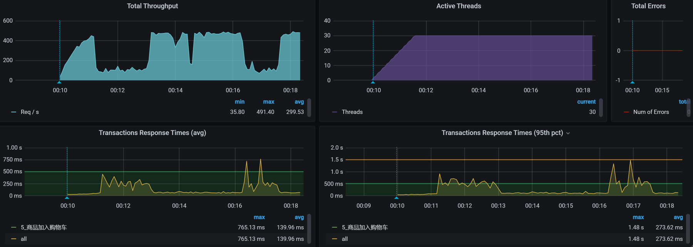
从数据上来看，报错没有了，这是一个合理的结果。
总结
现在，我们总结一下这节课。
“哎，哎，你先别总结呀，问题都没解决完，你看这不是还有TPS掉下来的情况吗？”
“年轻人，别捉急，饭都得一口一口吃，问题自然要一个一个解决了。这个问题，我会放在后面的课程中解决。”
在这节课中，我们从TPS不高开始，一直分析到了具体的SQL，看似是两个简单的索引就搞定的事情，逻辑也并不复杂，但是，这个分析思路非常重要。
对于第二个问题，我们从错误数据查到了日志中出现的死锁信息，这一点大部分人应该都可以做得到。只不过，能立即想到参数冲突的，就是有经验的人了。
此外，这里还有一个重点就是，参数化数据一定要符合真实场景！高老师已经反复强调很多遍了，希望你能记得住。
课后作业
最后，我给你留两道题，请你思考一下：
- 除了用本节课中的手段，你还有什么方法可以快速定位到SQL语句慢的问题？
- 你能画出在第二阶段分析中的逻辑吗？
记得在留言区和我讨论、交流你的想法，每一次思考都会让你更进一步。
如果你读完这篇文章有所收获，也欢迎你分享给你的朋友，共同学习进步。我们下一讲再见！
© 2019 - 2023 Liangliang Lee. Powered by gin and hexo-theme-book.